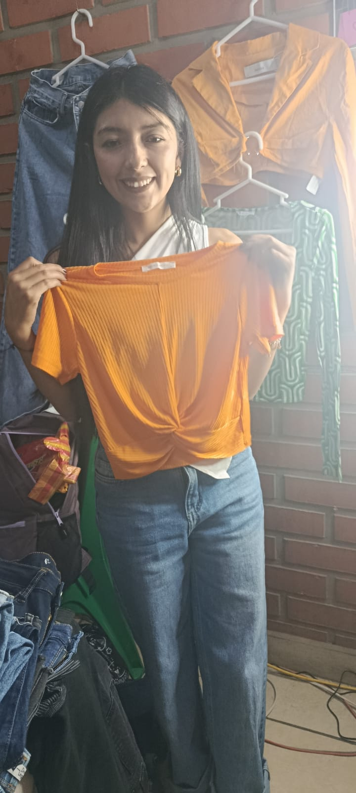
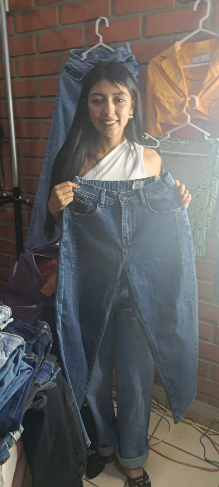

1. ¿Qué tipo de propuestas reúne este rubro?
Respuesta: Prendas, textiles y accesorios relacionados con la vestimenta y el estilo.
Prendas, textiles y propuestas de vestimenta presentes en los materiales de la feria, con atención al estilo y la presentación.
Ver preguntas y respuestas ↓Prendas, textiles y propuestas de vestimenta presentes en los materiales de la feria, con atención al estilo y la presentación. Las fotografías muestran ejemplos del material recopilado durante el recorrido de la feria.





Estas preguntas resumen información relacionada con el rubro. Cuando no se contaba con respuestas registradas de una entrevista, se redactaron respuestas orientativas para completar el material.
Respuesta: Prendas, textiles y accesorios relacionados con la vestimenta y el estilo.
Respuesta: La elección de la tela, las medidas, el diseño y la calidad de las costuras.
Respuesta: Manteniendo las prendas limpias, bien presentadas y siguiendo las recomendaciones de cuidado de cada material.
Este es el texto utilizado como referencia para diseñar el logotipo de este emprendimiento.
Diseña un logotipo moderno y elegante para un emprendimiento de moda y confección. Incorpora prendas de vestir, agujas, hilos o una silueta de ropa. Utiliza una combinación de negro, blanco y tonos beige para transmitir estilo, creatividad y profesionalismo. El diseño debe ser sencillo, original y adecuado para una marca de ropa. Utiliza un fondo transparente.